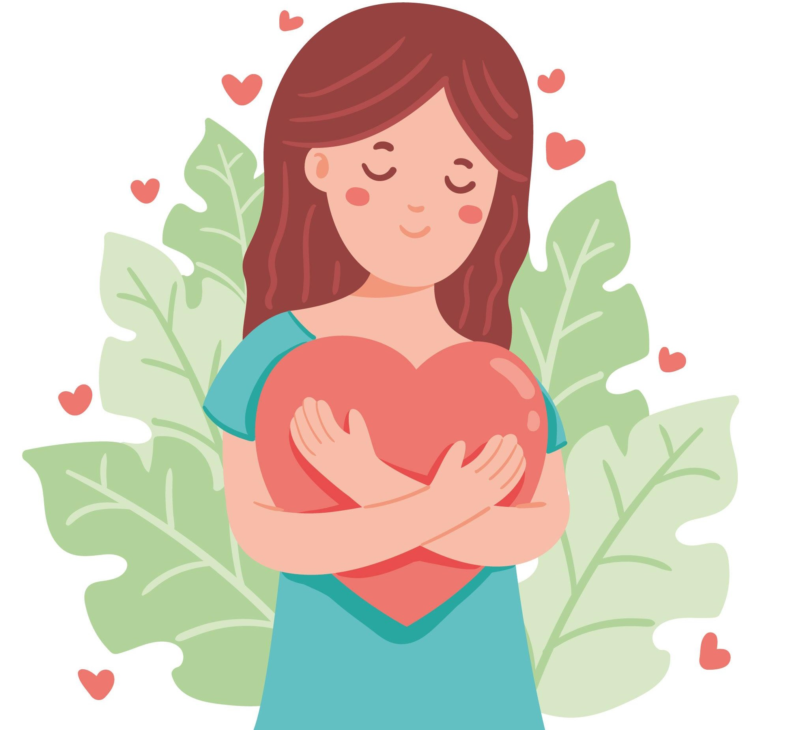

November5
Kesehatan Mental
Apa itu Kesehatan Mental?

Kesehatan mental adalah individu yang terbebas dari gejala psikiatri atau penyakit mental, terwujudnya keharmonisan antar fungsi-fungsi jiwa serta mempunyai kesanggupan untuk menghadapi problem-problem yang terjadi dan merasakan secara positif kebahagiaan atas kemampuan dirinya, bertujuan untuk mencapai kehidupan yang bermakna dan bahagia.
Jadi permasalahan Kesehatan Mental ini sangat penting dan perlu ditangani. Dengan membuat masyarakat memperhatikan kembali bahwa Kesehatan Mental sangat penting melalui website yang kami buat. Pembuatan website ini diharapkan akan membantu menjadi teman cerita dan sebagai sumber informasi valid mengenai Kesehatan Mental.
Tantangan Indonesia
Tantangan kesehatan mental di Indonesia
1. Pandangan buruk terhadap orang pengidap mental health
Pandangan buruk yang diberikan terhadap pengidap kesehatan mental sering terjadi. penilaian dan pengucilan terhadap pengidap kesehatan mental membuat orang itu memilih untuk diam dan tidak terbuka. Hal tersebut mengakibatkan angka pengidap kesehatan mental sangat tinggi di Indonesia.
2. Rendahnya pemahaman mengenai kesehatan mental
Di Indonesia, informasi mengenai kesehatan mental masih belum banyak dipahami oleh masyarakat. Minimnya pengetahuan tentang kesehatan mental membuat penilaian masyarakat terhadap pengidap gangguan kesehatan mental menjadi negatif. Orang-orang yang mengalami masalah kesehatan mental merasa masalah tersebut merupakan sebuah aib bagi dirinya.
3. Diskriminasi terhadap pengidap gangguan kesehatan mental
Pemahaman masyarakat yang rendah tidak jarang mengakibatkan munculnya diskriminasi terhadap pengidap gangguan kesehatan mental. Bentuk diskriminasi tersebut dapat berupa perlakuan kasar, penghinaan, maupun perundungan. Tak jarang pula masyarakat menjauhi pengidap gangguan kesehatan mental serta keluarganya.
Artikel Kesehatan Mental
Artikel seputar kesehatan mental


Oktober30
Jadilah Versi Terkuat Dari Diri Kita

Oktober25